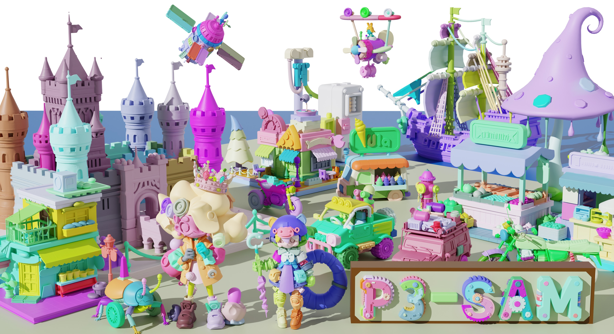
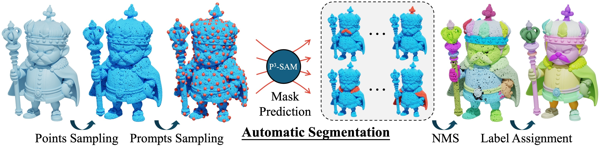

Segmenting 3D assets into their constituent parts is crucial for enhancing 3D understanding, facilitating model reuse, and supporting various applications such as part generation. However, current methods face limitations such as poor robustness when dealing with complex objects and cannot fully automate the process. In this paper, we propose a native 3D point-promptable part segmentation model termed P3-SAM, designed to fully automate the segmentation of any 3D objects into components. Inspired by SAM, P3-SAM consists of a feature extractor, multiple segmentation heads, and an IoU predictor, enabling interactive segmentation for users. We also propose an algorithm to automatically select and merge masks predicted by our model for part instance segmentation. Our model is trained on a newly built dataset containing nearly 3.7 million models with reasonable segmentation labels. Comparisons show that our method achieves precise segmentation results and strong robustness on any complex objects, attaining state-of-the-art performance. Our code will be released soon.
Network Architecture of P3-SAM: Input point clouds are fed to feature extractor to obtain point-wise features. The features, point prompts, and original point clouds are then fed to a two stage multi-mask segmentor to obtain three masks in various scales. Finally, the IoU predictor is utilized to evaluate the quality of the masks and select the best one as the final prediction.
Automatic Segmentation Pipeline: Point prompts are sampled by FPS and go through the P3-SAM to obtain multiple masks. NMS is then adopted to merge redundant masks. The point-level masks are then projected onto mesh faces to obtain the part segmentation results.
Our Segmentation Results on PartObj-Tiny
Our Segmentation Results on PartObj-Tiny-WT
Our Segmentation Results on AI Generated Models
Our Hierarchical Segmentation Results
If you find our work useful in your research, please consider citing us:
@misc{ma2025p3sam,
title={P3-SAM: Native 3D Part Segmentation},
author={Changfeng Ma and Yang Li and Xinhao Yan and Jiachen Xu and Yunhan Yang and Chunshi Wang and Zibo Zhao and Yanwen Guo and Zhuo Chen and Chunchao Guo},
year={2025},
eprint={2509.06784},
archivePrefix={arXiv},
primaryClass={cs.CV},
url={https://arxiv.org/abs/2509.06784},
}